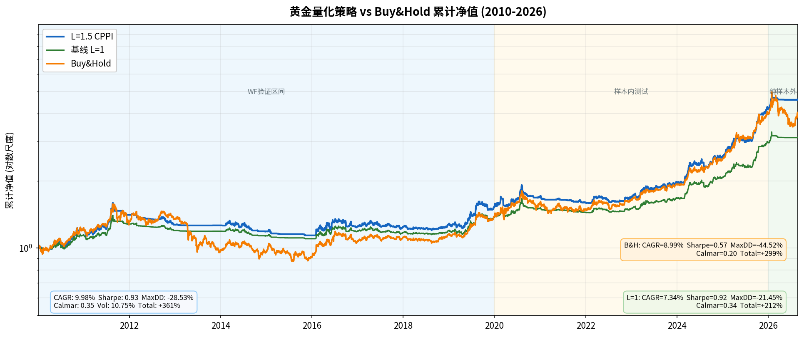
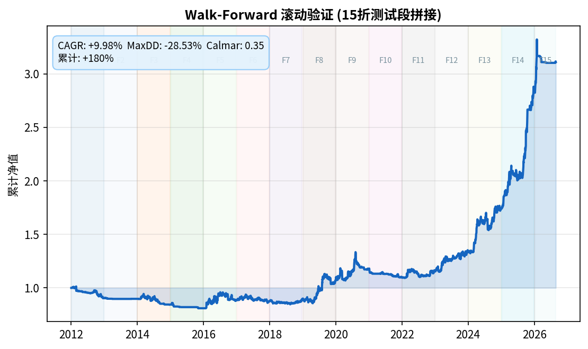
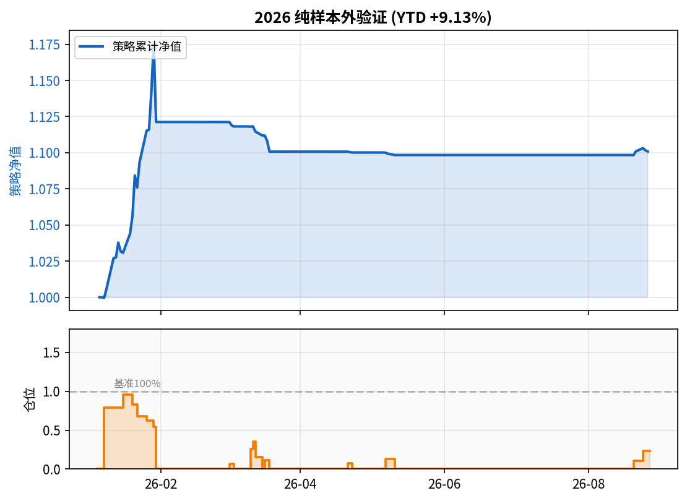
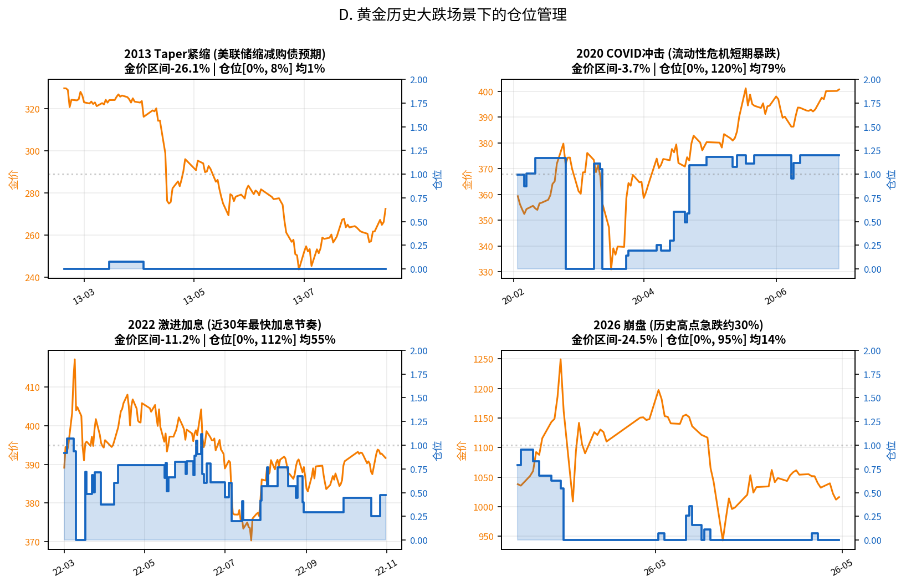

本报告为黄金量化配置策略的业绩概览。策略基于多信号融合与动态风险控制框架, 在严格控制回撤的前提下捕捉黄金中长期趋势收益。 以下展示策略全周期业绩表现、滚动验证结果、样本外测试表现, 以及历史极端行情下的仓位管理情况。回测均考虑交易成本与数据可得性约束。
样本内测试区间 2010-2019 滚动验证区间 2020-2025 纯样本外区间 2026

| 指标 | L=1.5 CPPI | L=1 基线 | B&H |
|---|---|---|---|
| 年化收益 | +9.98% | +7.34% | +8.99% |
| Sharpe | 0.93 | 0.92 | 0.57 |
| MaxDD | -28.53% | -21.45% | -44.52% |
| Calmar | 0.35 | 0.34 | 0.20 |
| 总收益 | +5456% | +2009% | +300% |
口径: 无前视 Open-to-Open + shift2统一入口 + 5bps成本
区间语义: 2010-2019 用于样本内参数确定与早期验证; 2020-2025 滚动验证(每折训练集=该折之前所有样本); 2026 纯样本外盲测。


| 年 | 区间收益 | 波动率 | MaxDD | Calmar | 区间收益 | MaxDD | |
|---|---|---|---|---|---|---|---|
| 2010 | +22.2% | 13.3% | -8.5% | 2.72 | +22.7% | -8.7% | |
| 2011 | +17.3% | 14.2% | -11.6% | 1.56 | +5.9% | -19.4% | |
| 2012 | +-9.5% | 6.7% | -10.9% | -0.91 | +2.6% | -13.3% | |
| 2013 | +-0.7% | 0.8% | -1.1% | -0.69 | +-28.8% | -30.8% | |
| 2014 | +-6.0% | 8.4% | -10.8% | -0.57 | +-2.5% | -17.7% | |
| 2015 | +-4.1% | 3.3% | -5.8% | -0.72 | +-5.6% | -16.6% | |
| 2016 | +9.5% | 16.1% | -8.4% | 1.18 | +17.0% | -11.5% | |
| 2017 | +-1.0% | 8.4% | -8.2% | -0.13 | +3.1% | -6.5% | |
| 2018 | +2.1% | 5.1% | -4.5% | 0.48 | +2.6% | -6.6% | |
| 2019 | +19.0% | 13.3% | -8.3% | 2.41 | +19.7% | -8.5% | |
| 2020 | +10.5% | 14.0% | -12.3% | 0.89 | +13.4% | -18.0% | |
| 2021 | +-6.8% | 3.5% | -7.1% | -0.99 | +-7.4% | -11.5% | |
| 2022 | +5.5% | 8.1% | -6.3% | 0.92 | +10.1% | -8.7% | |
| 2023 | +16.3% | 11.2% | -4.2% | 4.10 | +17.1% | -4.5% | |
| 2024 | +29.2% | 13.3% | -9.5% | 3.24 | +28.2% | -7.1% | |
| 2025 | +62.4% | 15.6% | -6.4% | 10.26 | +58.5% | -9.6% | |
| 2026 | +10.1% | 9.8% | -6.6% | 2.55 | +0.7% | -30.1% |
■ 左 L=1.5 CPPI / ■ 右 Buy&H / 绿底=跑赢 / 红底=跑输

数据: 每个场景窗口(前后各~40日)展示金价走势与策略仓位, 仓位阶梯线清晰展示"大级别止损, 小级别波动容忍"